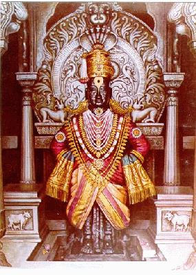
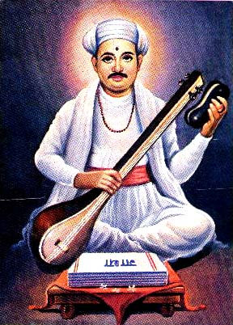
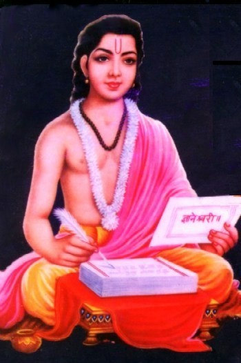
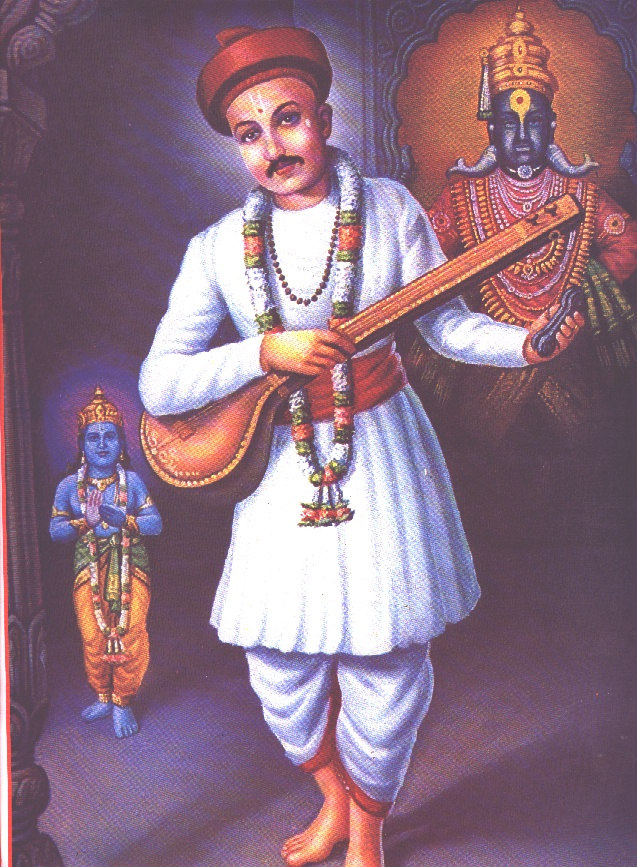

Abhang – the Immortal Composition
- K. Vrinda Acharya
“VEdAnAM SAmavEdOsmi” – declared Lord Krishna in the Bhagawadgita. The
Vishnusahasranama extols the Lord with the attribute “SAmagAyanaH”. The Indian
philosophical thought has always considered the path of devotion, often referred to
as Bhakti Yoga, as a means to Moksha. Innumerable saints, composers, mystics and
poets have sung the glory of the Lord and have thus enriched the musical corpus of
India with their devotion filled outpourings. Particularly, the Bhakti movement was
a historical-spiritual phenomenon that crystallised across the whole of India about
700 years ago. It was spearheaded by enlightened saint composers who exalted
devotion and love to God as the chief means of spiritual perfection and gave rise to
the Nama Sankeertana Sampradaya.
The Nayanars, Azhwars, Veerashaivas, Shankara, Ramanuja, Madhwa among others
nurtured the incipient bhakti movement, which later reached its pinnacle during the
14-16thcenturies. If it was Purandara, Kanaka and other Haridasas in Karnataka, it
was Tukaram, Namdev, Gnyaneshwar in Maharashtra. If it was Chaitanya
Mahaprabhu in Bengal, it was Kabir, Meera, Tulsidas, Surdas in northern India.
Abhangs are a sublime form of Indian Music whose origin can
be traced to the spiritual ideologies of the bhakti saints of
Maharashtra. Essentially these compositions are bhajans in
Marathi sung in praise of Lord Vitthala (also known as
Vitthoba) of Pandhrapur. They are characterised by simple
appealing tunes and meaningful words. The meaning of the
word Abhang can be derived from its root “A-bhang”(that
which has no bhanga or hindrance). Abhang literally
translates into “that which does not stop”. There is no
stoppage between the verses or the main line and the verse;
an abhang does not pause until it actually ends. Abhang also
means “compositions that would never be wiped off the face of
the earth.” It is eternal, ever new and always full of life.
Rendering of Abhangs attaches a great importance to the words, their diction,
chorus singing of the Dhruv Pad (normally the second line of the Abhang) and most



importantly the Bhava aspect. The talam-beat is also specific with a Tod finale
(Thirmanam).
The quintessence of Abhangs was predominantly Bhakti. They sought to lay
emphasis on devotion and love towards God, in contrast to blind adherence to
rituals and arcane religious practices. Besides this, individual sacrifice, non-violence,
compassion, peaceful co-existence, service to humanity were the values they
underlined. They preached people to cast aside the heavy burdens of caste and the
subtle complexities of philosophy and simply express their overwhelming love for
God. To enable even the unlettered masses to attain the highest state of devotional
bliss, they are composed in simple language. Yet, they are ecstatic, lyrical and
moving.
Sant Tukaram says that the greatest privilege for man is to be a bhakta and
propagate Namajapa. His ardent devotion towards Lord
Vitthala is evident in all his abhangs. He says “sadA mhAjhE
DOLe jaDO tujhi mUrti, rakumAyIchya pati sOyariyA” meaning
“O Lord Rakhumayi, I pray to you that your divine form is
forever before me”. In another popular abhang,
“ghEyi ghEyi vAchE gODa nAma viThObAche
tumhigyArE DOLe sukha pahA viThalAche mukha
tumhi AyIkAre kAn mAjhya viThObAche guNa
manA tethe dhAv ghEyi rAhe viThObAche pAyi
tukA mhaNe jIvA nakO sODU yA keshavA”,
Tukaram pleads with his senses-“I always take the sweet name of Vitthoba; O eyes,
comfort yourself by viewing the divine face of Vitthala; O ears, satiate yourself to the
praise of my Vitthoba; O mind, do not wander here and there, surrender yourself to
the feet of Vitthoba; Tuka says O soul, do not leave Keshava” This couplet is a
manifestation of the epitome of Bhakti that is the essence of Abhangs.
One of the most essential qualities of a true Bhaktha is to completely surrender
himself to the Lord’s feet. We come across such an elevated Bhava in an abhang by
Sant Namdev, who was known to have seen the appearance of Lord Vitthala in his
original form. He says
“MAjhe manOratha pUrNa kari dEvA
kEshavA mAdhavA nArAyaNA-
nAhee nAhee maja ANika sOyarA




na kari ou hErA pAMDuraMgA
anAthAnyA nAtha hOshitO dayALa
kitee vELO vELA prArtho AtA
nAma mhaNi jeeva hOtO kasA veesa
kalee tujhi Asa atAvaree”
“O Lord, please fulfill my desires, Keshava, Madhava, Narayana,
I have no other soul mate. Do not reject me Panduranga.
Guardian of all, be kind to me, how many times should I pray to
your nama says soul is so restless, I have been longing for you
till now.” Namdev exemplifies the bhakti saint, a solitary soul in
search for God. His collection of Abhangs called the “NamdEvAchi GAtha” includes
the long autobiographical poem “TIrathAvah”.
The Abhangs of Sant Dhyaneshwar (also known as Gnyanadeva) are a combination
of scholarly intelligence and poetic beauty. His commentary “BhavArthadIpika”
explains as abstruse a subject like the Bhagawadgita in lucid words. The following
Abhang glorifies his teachings.
“ruNu jhuNu ruNu jhuNurE bhramara
sAMDeetO avaguNu rE bhramara
charaNa kamaLadaLu rE bhramara
bhOgee tU nishwaLu rE bhramara
sumana sugaMdhu rE bhOvara
parimaLa vidgadu rE bhOvara
soubhAgya suMdaru rE bhramara
bhApa rakhumA dEvivaru rE bhramara”
Here, Sant Dhyaneshwar compares the mind to a bee, which keeps
flying making a buzzing sound until it reaches its final destination, the flowerbed
with nectar. Similarly, the mind with its two wings (Ahamkara and Mamakara) flies
around the world making sounds (grieving, complaining, etc). Until it reaches the
final destination viz. the Lord’s lotus-feet (flower bed) to enjoy eternal bliss
(nectar). In order to train the mind to meditate on the Lord’s feet, one has to resort
to Nama Smarana.
Abhangs also disseminated many lofty moral values and philosophical ideologies
among the masses. For instance, in a Tukaram Abhang “NAhi santpAn milat hAti….”,
he says “Saintliness is not to be purchased in shops nor is it to be had from
wandering about nor in cupboards nor in deserts nor in forests. It is not obtainable
for a heap of riches. It is neither in the heavens above nor in the entrails of the earth
below. Tuka says: It is a life's bargain and if you will not give your life to possess it
better be silent”. Morality shines in all its glory in another Tukaram Abhang
“PApAchi vAsana nako davU DOla….”, which means “O God, let me not be the witness
to sin, better make me blind; let me not hear ill of anyone, better make me deaf; let
not a sinful word escape my lips, better make me dumb; let me not lust after
another's wife, better I disappear from this earth. Tuka says: I am tired of everything
worldly, Thee alone I like, O Gopal!”.
Our scriptures have always upheld the importance and worth of a Guru in the
spiritual quest of a Sadhaka. There are ample of Abhangs which proclaim the glory
of Sadguru. In one of her Abhangs, Mukthabai(sister of Dhyaneshwar) affirms that
there is no point in calling oneself a bhakta without Gurukrupa and nothing is
possible without the guidance and blessings of a Sadguru. The abhang goes like this.
“zalAsi hari bhakta, tari Amha kAy
Atali ti sOyi, na thauki
guruvin tuj, nAvEchi ga MokSha
hOshil mumukShu sAdhak tu
santAncha sanmAn kalEna tayAsi
rAhuni dEva pasi kay KElE
mhAnE muktAbAi, pUre te darshan
guruvin sant pAn Ahe kOthe”
Sant Eknath, Swami Samartha Ramdas, Sant Chokha Mela, Janabai, Kanhopatra, Sant
Sawta Mali, Sant Narahari Sonar and Sant Gora Kumbar are some of the other
luminaries who have adorned the bhakti firmament of Maharashtra and have given
birth to the “Vaarkari Sampradaya”.
Abhang is truly an art form that propagates devotion and high ideals through
beautiful poetry. It is indeed an integral part of Indian music, literature and
philosophy.